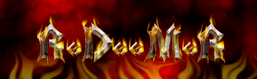

Hello.
j00 were ch0wn3d! :)
j00r index.html is now known as r00t3d.html for j00r convinience.
We are elite as w3 sp34k l1k3 d1s!! :)
lmao.
j00r host0r is ins3cur3!! :)
DES encryption indeed...
I'd like to take this opportunity to thank my fans, my manager, w00t0r recording studios, and my hamster.
Thank you.
-ReDeeMeR
Shouts to: #ch0wn, chawmp, Enstyne, TG, keoki, gM, y0shi, my Mom, Britney Spears, Kevin Mitnick (Free him!) and da sub7 m0b for being so god damn elite.
Buhahaha, ph33r my 800MHz DES crack0r! :)
Shouts to: #ch0wn, chawmp, Enstyne, TG, gM, keoki.
-CrazyHorse
Hey shadowsboxers, how do I use msadc2.pl again?!